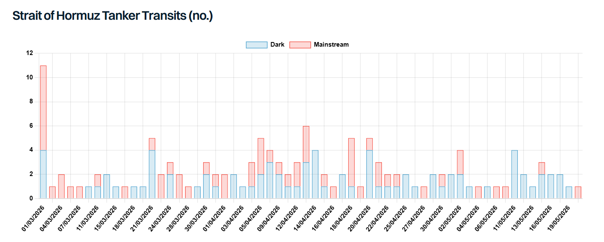

The Iran conflict is in its 12th week now, and the prospect for a deal which leads to normalisation in the Middle East look tenuous. Despite seeing some progress in the number of tankers transiting the Strait of Hormuz, compared to pre-war levels flows of oil and products remain at a trickle, with Iran and the US both vying for control. Numerous conditions would need to be met before pre-war traffic could resume; security guarantees, mine clearance, and a renewed insurance framework, among others. If these conditions are met, and such a comprehensive agreement is reached today between Iran and the US (as well as Israel and the GCC), what would the timeline be for a resumption of Middle East Gulf exports?
Initially, there is likely to be some residual hesitancy in transiting the Strait, and only higher-risk owners might commit. These transits may occur along the tried and tested post-war routes following the Iranian or Omani coastlines, especially if uncertainty remains about the location of possible mines. At the time of writing there are 157 mainstream tankers above 25,000 DWT positioned inside the Middle East Gulf, of which 123 are laden and will attempt to exit swiftly.
The over 150 ballasters above 25,000 DWT positioned in the Gulf of Oman are promptly positioned and will be able to sail and get fixed to lift cargoes in short order. Freight rates will initially be high and volatile, coming down as vessels enter the Gulf and the risk and hazards are confirmed to be low. A degree of port congestion may occur at this stage, as port loading schedules are re-established. At this stage, differences in readiness of export infrastructure as well as port operations will make themselves known. The latest reports suggest that port operations are in place in most ports inside the Gulf, indicating that this factor will be a minor constraint towards resumption of exports.
Crude inventory clearance should swiftly lead to high volumes available for export. The IEA estimates that countries such as the UAE and Saudi Arabia with more resilient supply chains and greater levels of inventory should be able to sustain high levels of exports within weeks to months. Saudi Arabia may gradually reduce flows on the East-West pipeline to reduce inefficiencies and improve export economics. Similarly, the UAE may return flows through the Habshan pipeline to Fujairah back to pre-war levels. Qatari operations are comparatively less resilient and expected to take more time to return to normality. In Iraq, despite repeated assurances from the oil ministry that exports can be restored to pre-war levels within a week, port congestion, limited inventory, and a reliance on international operators are likely to significantly hinder a return to pre-war exports. Kuwait and Bahrain face similar issues due to a lack of domestic operators and equipment provision. The most pessimistic observers suggest that full oil flows from the region will not return until well into 2027. In the meantime, it is possible that Saudi Arabia could use spare capacity to substantially boost exports and help compensate for the loss elsewhere.
On the CPP side, significant uncertainty remains when it comes to restoring refinery operations and consequent CPP exports inside the Gulf. Several refineries, including Ras Tanura and Ruwais, are operating normally. On the other hand, damage at Sitra, Mina Al-Ahmadi, and Satorp is expected to take longer to repair and timelines are unclear. With that in mind, near pre-war CPP exports are likely to lag oil flows and take well into 2027 to reestablish.
A further consideration is the longer-term availability of tonnage. Tanker supply is still readjusting to the new normal, suggesting it could take months for vessel positioning to normalise. Significantly more vessels are now positioned in the West, in large part due to record volumes of both crude and products coming out of the US Gulf. The tanker market will have to react and adjust to the resumption of operations, with uncertainty around export volumes on both the dirty and clean side complicating operational decisions. Ballasters are thus unlikely to react immediately and reposition themselves efficiently in the wake of a normalisation process beginning. Western-positioned vessels are weeks from the Gulf and unlikely to commit to an expensive ballast without a paying cargo to cover the eastbound leg.
Overall, the path towards resumption of trade through the Strait of Hormuz is fraught with uncertainty, even in a scenario where a comprehensive agreement is reached and all prerequisites for resumption of trade are met. At this point, this scenario is hard to envisage, and a gradual resumption may present a more realistic outlook. Indeed, a full return to the pre-war status quo looks decreasingly likely by the day, as structural changes both on the supply and demand side are taking place globally in response to the war. Further, it will take longer before impacted refineries and petrochemical plants are able to ramp up again, with clarity on lead times and supply chains imperative for normal operations to resume. Accordingly, the recovery sequence is likely to favour crude tankers over product tankers. VLCCs and LRs, with heavy reliance on Middle East volumes, will breathe a more immediate sigh of relief. However, inefficiencies and insecurity about cargo availability will remain significant drivers of volatility in tanker markets in any scenario.

Data source:Gibson Shipbrokers